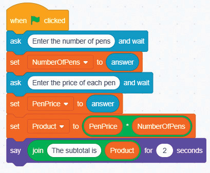

Code blocks

Activity 4: Using variables and operators
Create a program that adds two numbers with six-digits. Create variables, get user input, perform the addition, and display the result. Follow the steps below.
Steps
-
1.
From the Event block, choose the when green flag clicked block.
-
2.
Create variables for storing the first number, the second number, and the sum through the Variables block. Name the variables as number1, number2 and sum respectively.
-
3.
Get user input by using the Sensing, Ask and wait block. Store the input in the number1 and number2 variables.
-
4.
Use the addition block inside the set ( ) to ( ) block to calculate the sum by adding number1 and number2 and storing the result in the sum variable.
-
5.
Display the result by using the Say ( ) block to display the sum to the user. The coded blocks will appear as shown in Figure 5.